DALE CARNEGIE · HOW TO WIN FRIENDS · APPENDIX · BY LOWELL THOMAS · PDF p240–251
A Shortcut to Distinction
Who Dale Carnegie was, how a poor farm boy who failed at almost everything turned public speaking into a school for courage, and why thousands of busy adults paid to learn from him.
This last section is not by Carnegie. It is a short portrait written in 1936 by his friend, the broadcaster Lowell Thomas, as the introduction to the first edition, and it is reprinted at the back of the revised book. It opens on a winter night in 1935, when 2,500 business people packed a New York hotel ballroom to watch graduates of Carnegie's course speak for 75 seconds each. Three of them tell how learning to talk in front of others changed their careers. Thomas then tells Carnegie's own story: a Missouri farm, a college where he felt ashamed of his clothes, months of failed speaking contests, a run of jobs that mostly went badly, and finally a night class at the YMCA that the YMCA itself did not believe in. The thread through all of it is practice: Carnegie made every student speak at every session, because the cure for fear is doing the feared thing until you have a record of getting through it.
The portrait's main claim (no principle in this section)
The ability to speak is a shortcut to distinction.
How the chapter fits together
pdf p240–251 · read this first
Where it sits. This is the appendix, placed after the last chapter of Part Four, "Be a Leader" (Ch.30 "Make the other person happy about doing the thing you suggest", which ends with Part Four's "In a Nutshell" list). Lowell Thomas wrote it in 1936 as the introduction to the original edition; the revised edition moved it to the back so readers could get some background on the author. The book's own front matter tells the same origin story from Carnegie's side: in "How This Book Was Written—and Why" (front matter, pdf p13–18) Carnegie explains that his public-speaking classes made him realise adults needed training in getting along with people even more, and that this book grew out of those classes. Here we see that from the outside, through a friend and former student.
The argument as a chain. Thomas writes like a journalist, not a teacher, but the piece does make a case.
HookJan 1935: 2,500 people pack a ballroom→to learn to speak and lead
Whysurvey: adults want health, then human relations→no practical manual existed→knowledge alone does not get you ahead
ProofO'Haire (fear → sales)Meyer (silent → council)association head (free publicity)
Claimspeaking is a shortcut to distinction→Carnegie heard 150,000 talks
His lifefarm and poverty→lost contests, then won all→sales: fail, then top→acting, Packard→YMCA night class
Methodconfidence + a burning idea→do the thing you fear, build a record→everyone speaks every session
Resultpractical system: speaking + selling + people + psychology→clubs meeting for years→a movement in adult education
For youthe book's last page: "Record Your Triumphs Here"→recap of all 30 principles
About the title: Thomas uses "a shortcut to distinction" twice. Once for public speaking in general (anyone who can talk well gets noticed and gets credit), and once for what the young Carnegie went looking for at college when he felt poor and invisible. The phrase names both the claim and the man.
01 · THE OPENING SCENE
The ballroom night: 2,500 tired business people come to learn to talk
pdf p240
What this section is. A short note at the top explains that Lowell Thomas wrote this piece about Carnegie as the introduction to the original 1936 edition, and that the revised edition keeps it so readers know a little about the man behind the book. Thomas starts not with Carnegie but with a crowd.
New York · a cold January night, 1935Hotel Pennsylvania, grand ballroom2,500 peopleseats full by 7:30standing 90 minutes
The scene. Every seat in the ballroom was taken by half past seven. At eight people were still arriving; the balcony filled, then even standing room ran out, and hundreds stood for an hour and a half after a full working day. Thomas teases the reader: what could draw a crowd like that? A fashion show, a six-day bicycle race, a film star such as Clark Gable in person? None of those.
The bait. Two days earlier the New York Sun had carried a full-page advertisement with a plain, old-fashioned promise:
"Learn to speak effectively. Prepare for leadership."The newspaper advertisement, as quoted by Thomas (pdf p240)
Why that is surprising. Thomas admits the pitch was nothing new. But this was New York, which he calls the most sophisticated city in the world, in the middle of the Depression, with about one person in five living on public relief. And the people who came were not the desperate; they were from the better-off end of society: executives, employers and professionals.
What they came for. The opening session of a course called "Effective Speaking and Influencing Men in Business", run by the Dale Carnegie Institute of Effective Speaking and Human Relations, which Thomas describes as thoroughly modern and practical.
Dated wording. The course title says "Influencing Men in Business", though Thomas himself notes that both men and women filled the hall. Today it would simply be "influencing people at work". "On relief" means receiving government welfare during the Great Depression.
Beyond the book
The Hotel Pennsylvania stood opposite Penn Station in Manhattan and was one of the city's largest hotels; it was demolished in the early 2020s. Clark Gable was the biggest male film star of the mid-1930s, so Thomas's joke is "they did not come for a celebrity". Six-day bicycle races were a popular spectator event at Madison Square Garden at the time.
Picture it
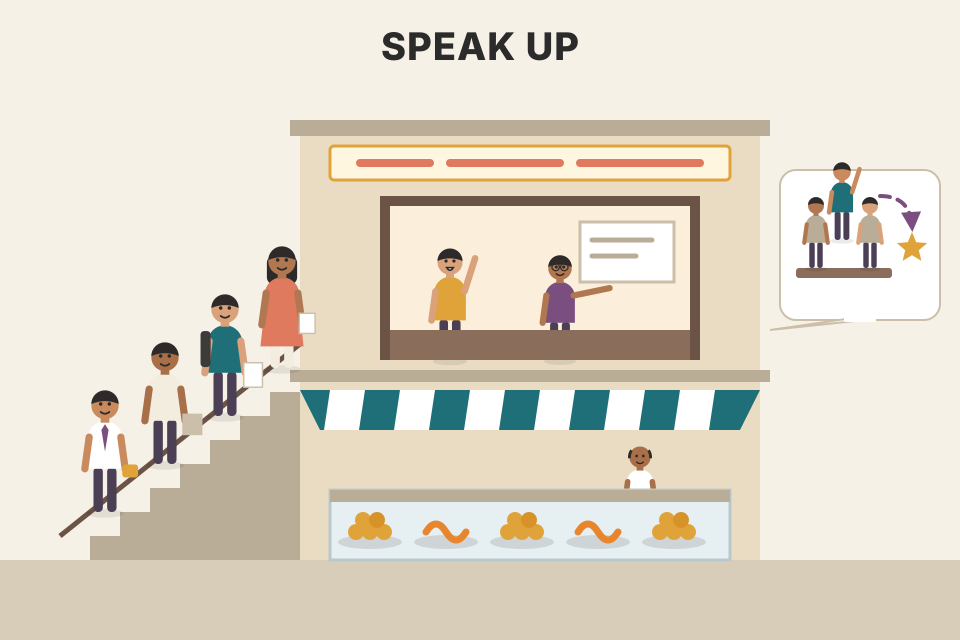
A Sunday-morning "Spoken English and Personality Development" class above a sweet shop in Patna, with a hand-painted banner and a queue of bank clerks, shop owners and engineering graduates down the stairs. Nobody is forced to come. They have all noticed that the person who speaks up in the meeting gets the promotion, and they want that for themselves.
Where it breaks: many of those classes promise confidence through grammar drills. Carnegie's crowd was already fluent and well-off; what they lacked was the nerve and the method to stand up and persuade, which no grammar book teaches.
What's happening behind it
Thomas's reading: the size and kind of crowd is his first piece of evidence. If successful, educated people will stand for ninety minutes after work, in hard times, to hear about speaking and leadership, then something in their schooling left a gap that they feel sharply.
Beyond the book: the scene is also good marketing, and Thomas was a friend and former colleague of Carnegie's, writing the introduction to his book. Read it as an admiring portrait, not as neutral reporting.
At work
Engineering careers show the same gap. Two engineers write equally good code; the one who can explain a design in a review, demo a feature to a client, or give a clear incident update in a crowded channel gets noticed, trusted with bigger work, and promoted sooner. Companies know it, which is why so many run internal "tech talk" series and presentation workshops, just as Westinghouse and New York Telephone brought Carnegie's course into their offices.
Interview angle. Every interview is a short speech: "Tell me about yourself", "Walk me through this system", "Describe a project you're proud of". Technical skill gets you the interview; being able to explain it clearly, under some pressure, is what the interviewer actually sees.
What adults actually wanted to learn, and why nobody had taught it
pdf p241–242
Not a Depression fad. Were people there because hard times made them hungry for education? Thomas says no: the same course had sold out in New York every season for the previous 24 years. In that time Carnegie had trained more than 15,000 business and professional people. Even big, cautious, conservative organizations had him run it in-house for their staff and executives:
Westinghouse ElectricMcGraw-Hill PublishingBrooklyn Union GasBrooklyn Chamber of CommerceAmerican Institute of Electrical EngineersNew York Telephone
A verdict on schooling. Thomas draws a sharp conclusion: if grown adults, ten or twenty years out of school or college, still sign up for this, their education must have left something important out.
The survey. To find out what adults really want to study, three bodies (the University of Chicago, the American Association for Adult Education and the United Y.M.C.A. Schools) ran a survey over two years. It found:
First interest: health.
Second interest: human relationships, meaning how to get along with other people and influence them.
They did not want to become public speakers, and they did not want lofty talk about psychology. They wanted suggestions they could use straight away: at work, socially and at home.
The missing textbook. The survey team decided to offer a course on exactly that and went looking for a textbook. There was none: no practical working manual on handling everyday problems with people had ever been written. Thomas finds this absurd. For centuries scholars had produced learned books on Greek, Latin and higher mathematics, which most adults do not care about at all, and on the one subject adults were desperate for, nothing. That gap, he says, explains the crowd at the Hotel Pennsylvania: here at last was what they had been looking for.
The disillusionment. At school and college these people had believed that knowledge by itself was the key to money and professional success. A few years of real business life taught them otherwise. They watched some of the biggest wins go to people who had knowledge plus the ability to talk well, to bring others round to their view, and to "sell" themselves and their ideas. To captain the ship of business, they concluded, personality and the ability to talk matter more than knowing Latin verbs or holding a Harvard diploma.
Which principle? Guess the survey
The two-year survey asked adults what they most wanted to study. Pick what you think came second.
Pick one.
Picture it
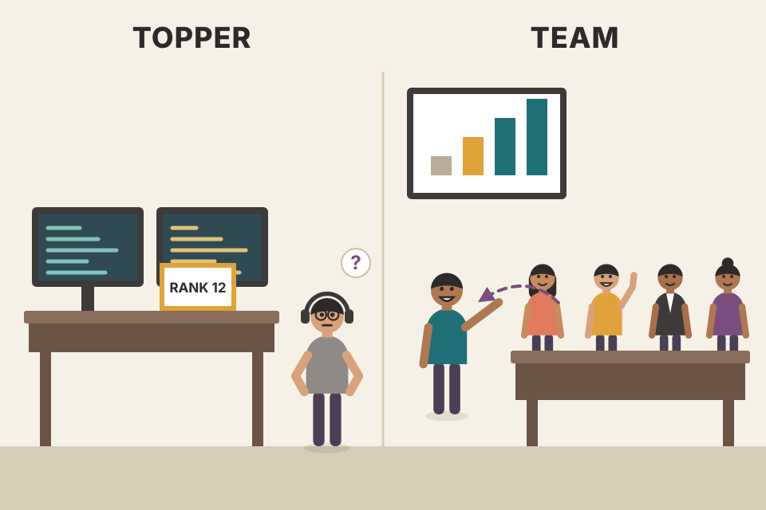
An IIT topper joins a Bengaluru product company and is quietly overtaken within two years by a batchmate from a smaller college who is comfortable presenting to clients, calming an angry stakeholder and pitching an idea at the all-hands. The topper still has the better JEE rank; the batchmate has the team.
Where it breaks: in engineering, knowledge still decides a lot, and a smooth talker with weak skills gets found out in code review. The point is "knowledge plus the ability to communicate", not "communication instead of knowledge", which is what Thomas also says if you read him carefully.
What's happening behind it
Thomas's explanation: schools taught subjects that are easy to examine (languages, mathematics) and skipped the one that adults use every day. People discover the gap only after they leave, when results start depending on other people.
Beyond the book: this is still true of most technical education. Engineering degrees rarely teach running a meeting, giving feedback or persuading a sceptical stakeholder, and many surveys of employers list communication among the skills they find hardest to hire for. Carnegie's course was an early, commercial answer to that gap; today's equivalents are toastmasters clubs, leadership programmes and the soft-skills modules of MBA courses.
At work
For a backend engineer the "Latin verbs" are the things you can be examined on (algorithms, a language's corner cases). The "human relations" skills are what decide how far those take you: writing a design doc others actually read, getting a sceptical senior to agree to a migration, explaining to a PM why the estimate is three weeks, not one. You can practise both, but only the first shows up on a coding test.
Interview angle. In behavioural rounds ("Tell me about a time you had to convince someone…"), interviewers are testing exactly the skill this survey found people wanted and schools never taught. Prepare those stories with the same care as system design.
Connects to
Carnegie describes the same survey and his own search for a textbook in the front matter.
"Selling" your ideas by speaking to what the other person wants: Part One, Ch.3.
03 · THE SHOW
Seventy-five seconds each, then the gavel
pdf p242
The format. The newspaper had promised an entertaining evening, and Thomas says it delivered. Eighteen former students were lined up in front of the loudspeaker. Fifteen of them got exactly 75 seconds each to tell their story. When the time was up, the chairman banged the gavel and called the next speaker. The evening moved so fast that the audience happily stood through the whole ninety minutes.
"Time! Next speaker!"The chairman's call, as quoted by Thomas (pdf p242)
Who spoke. Thomas stresses that they were ordinary working people, a cross-section of life:
several salespeoplea chain-store executivea bakera trade-association presidenttwo bankersan insurance agentan accountanta dentistan architecta druggist from Indianapolisa lawyer from Havana
Two of them had travelled a long way for the course: the druggist came from Indianapolis to New York to take it, and the lawyer came from Havana to prepare for one important three-minute speech. The next three plates follow the first three speakers.
Try it: your own 75 seconds
Pick a prompt, press Start and say it out loud (really out loud, not in your head). The gavel falls at 75 seconds.
1:15
A good 75-second story has one situation, one change, and one result. No warm-up, no list of everything you have ever done.
Picture it
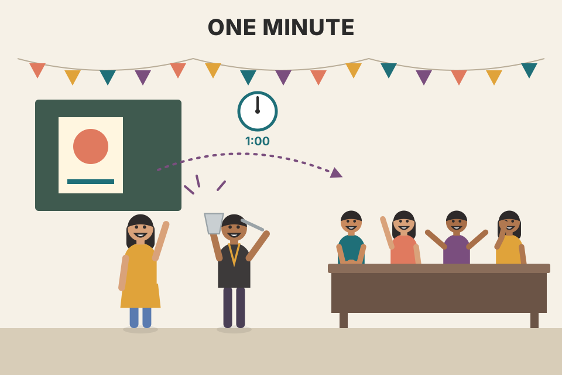
The "one-minute introduction" round on the first day of a college fest committee: thirty nervous students, a senior with a steel tumbler and spoon who clinks it the moment your minute is up. Everyone laughs, nobody is allowed to ramble, and by the end the room knows thirty people a little.
Where it breaks: the fest round is a party game. Carnegie's graduates had trained for weeks and were showing results in front of 2,500 strangers; the hard limit was there to show that they could be clear, not to make them squirm.
What's happening behind it
From the portrait: the time limit and the variety of speakers were the advertisement. If a baker, a dentist and a man with four years of schooling can each hold a ballroom for 75 seconds, the audience thinks "so could I".
Beyond the book: short, hard time limits are used in many speaking formats today (lightning talks of five minutes, the 20-slide "PechaKucha" format, elevator pitches). A tight limit forces you to choose one point, which is the main skill of clear speaking.
At work
Stand-ups are the 75-second format. "Yesterday I looked into the cache thing and also some of the tickets and I think maybe…" loses the room. "Payment retries: fixed the double-charge bug, PR is up, blocked on a review from the billing team" takes 12 seconds and everyone knows what to do. A demo to a client works the same way: one problem, one result, then stop.
Interview angle. Use the timer above for "Tell me about yourself". Aim for about 75 to 90 seconds: who you are now, one or two things you built and what they changed, why this role. Interviewers decide a lot in those first minutes, and most candidates either ramble for five minutes or freeze.
Patrick O'Haire: the truck salesman who couldn't open the door
pdf p243
born in Ireland4 years of schoolmechanic → chauffeur40, growing familyselling trucks
Step through his story; each step is retold in our words.
Step through the story
The short version. The course did not teach him anything about trucks. It took away a fear that was blocking everything else, and once it went, promotions and goodwill followed.
Dated wording. Thomas calls it a "gay, rollicking story"; in 1936 "gay" simply meant cheerful and lively.
Picture it
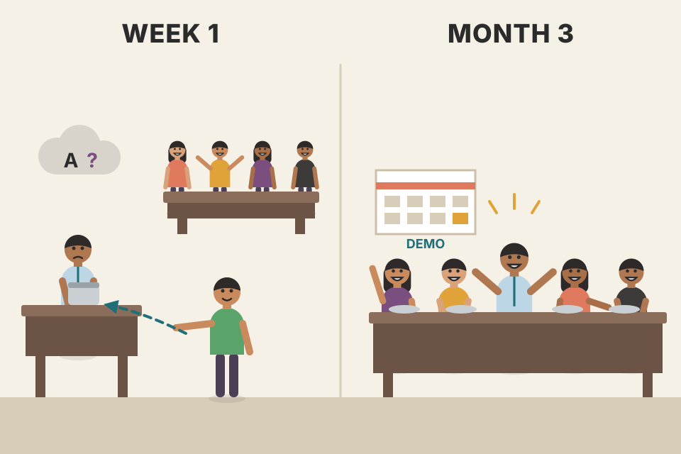
A young man from a small town in Andhra gets his first job at a Hyderabad IT park. For a week he eats lunch alone because he is sure his English is not good enough for the group from the metros. One day a teammate drags him along. Three months later he is the one telling the funniest stories at the table and has volunteered to give the team's demo to the client.
Where it breaks: O'Haire's change came from deliberate, weekly practice in a structured class, not just one lucky invitation. Being pulled into the group is the open door; walking through it again and again is what changes you.
What's happening behind it
From the portrait: O'Haire's problem was not lack of knowledge about trucks; it was fear, which Thomas calls an inferiority complex "eating his heart out". Speaking in class attacked the fear directly, and the confidence spread: once he was not afraid of an audience, he was not afraid of his boss either.
Beyond the book: psychologists call this kind of spreading confidence self-efficacy (Albert Bandura's term): your belief that you can handle a type of situation. Bandura found that the strongest source of it is mastery experience, actually succeeding at the feared thing, and that success in one hard area tends to raise confidence in nearby ones.
At work
Many strong engineers are O'Haire in meetings: they know the answer and stay quiet because the room seems full of people who talk better. The fear also blocks things that matter to the career: asking a senior for a review, raising a risk with a director, negotiating an offer. Practising in a low-stakes room (team demo, internal brown-bag talk) is exactly what his class gave him, and the confidence carries into 1:1s and negotiations.
Interview angle. "Tell me about a weakness you have worked on" fits this story shape: a real fear, a specific thing you did repeatedly to face it, and evidence it changed. That is far stronger than "I'm a perfectionist".
O'Haire's wife giving him a push mirrors Carnegie's advice to give people a reputation to live up to: Part Four, Ch.7.
05 · THE SECOND SPEAKER
Godfrey Meyer: from struck dumb to top of the town-council ballot
pdf p243–244
Thomas uses Meyer as a clear case of a pattern he states outright: leadership drifts towards the person who can talk.
grey-haired Wall Street bankerfather of 1125 years in Clifton, New Jerseyknew ~500 people96 candidatestown of 40,000
Before. The first time Meyer tried to speak in class, his mind went completely blank and he could not say a word. In twenty-five years of living in Clifton he had played no active part in local affairs and knew perhaps five hundred people.
The trigger. Soon after he joined the course, his tax bill arrived and he was furious at what he saw as unfair charges. The old Meyer would have stewed at home or grumbled to the neighbours. This time he put on his hat, went to the town meeting that evening, and said his piece in public.
What followed. His angry speech went down so well that townspeople urged him to stand for the town council. For weeks he went from meeting to meeting, speaking against waste and extravagant municipal spending. There were 96 candidates; when the votes were counted, Meyer's name was at the top.
The result. Almost overnight he became a public figure among the 40,000 people of his community. Thomas claims Meyer made eighty times more friends in six weeks through his talks than in the previous twenty-five years, and that his councilman's salary paid him back about 1,000 percent a year on what the course had cost.
Worked example: reading Thomas's numbers (modelled)
The book gives the claims, not the inputs, so these figures are modelled to show what the claims would mean.
"Eighty times more friends". If "friends" means the roughly 500 people he knew, eighty times that would be 40,000, the whole town. So read it as a loose way of saying "he became known to almost everyone", not a count.
"1,000 percent a year". A 1,000% annual return means each year's salary was about ten times the course fee. If the course cost a modelled $50, the council post would have paid about $500 a year.
Both are a journalist's flourishes. The fact under them is solid enough: a man who had been silent for 25 years topped a field of 96 because he could stand up and say what others were thinking.
Picture it
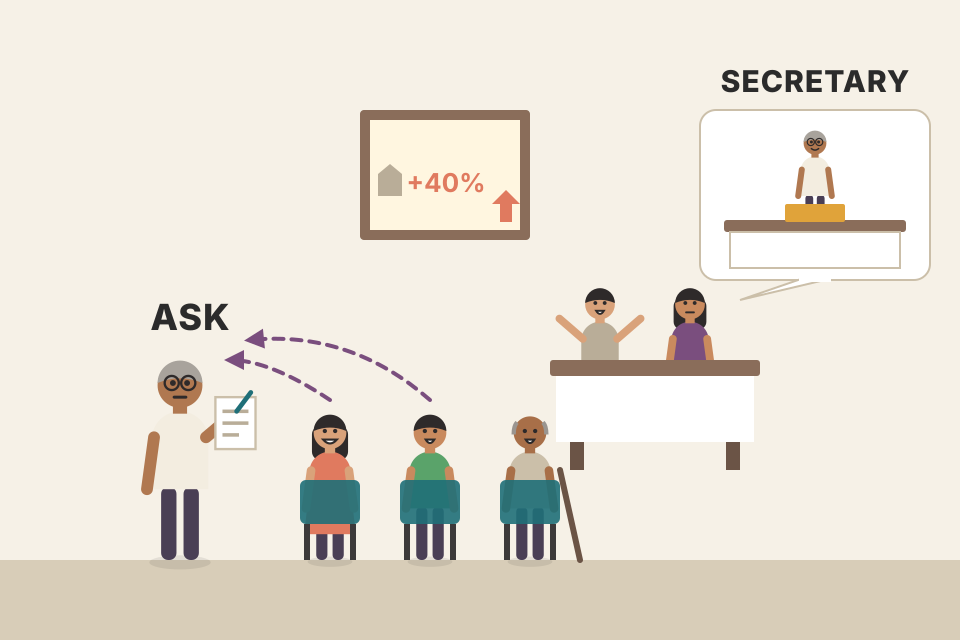
A retired bank officer in a Pune housing society has kept to himself for twenty years. Then the maintenance charges jump by 40% with no explanation. At the annual general meeting he stands up and calmly asks for the accounts, line by line. People who had never spoken to him come up afterwards, and the next year he is elected society secretary.
Where it breaks: a society AGM is a small, friendly room. Meyer faced a whole town and 95 rival candidates, and he had to keep it up for weeks. The spark is the same; the campaign took real stamina.
What's happening behind it
From the portrait: anger gave Meyer something to say, and the course had given him the nerve to say it. Later (plate 14) Thomas reports Carnegie's own theory: everyone can speak well when they are angry enough, because the idea is "boiling" inside them. Meyer is that theory in action.
Beyond the book: groups tend to treat the person who speaks up first and clearly as a leader, often before they know whether that person is the most competent. Researchers who study group behaviour have repeatedly found that the amount someone talks predicts whether others see them as the leader (the so-called "babble hypothesis"; for example a 2020 study by Neil MacLaren and colleagues found speaking time mattered more than measured intelligence or personality). That is Thomas's "leadership gravitates to the person who can talk", and it is both an opportunity and a warning.
At work
Every team has a Meyer moment: the on-call rota is unfair, the build takes forty minutes, a policy wastes everyone's time. Most people grumble in DMs. The one who raises it calmly in the retro or the all-hands, with facts and a proposal, often ends up owning the fix and becomes a go-to person. Carnegie would add: speak to the problem and the proposal, not against a person (Ch.1).
Interview angle. "Tell me about a time you took initiative" or "…drove change without authority". A good shape is Meyer's: a real frustration, a decision to raise it in the right forum instead of complaining, and the concrete change that followed.
Why "don't complain" is not the same as "never raise a problem": Part One, Ch.1.
06 · THE THIRD SPEAKER
The association head who couldn't speak at his own board
pdf p244
head of a national food-manufacturers' association2 years$250,000 of advertisingAssociated Press wires
Before. This speaker ran a large national association of food manufacturers, yet he could not stand up and put his ideas across at meetings of his own board of directors.
The two surprises. Once he learned to think on his feet, he was soon made president of the association, which meant addressing meetings all over the country. Then parts of his speeches were carried on the Associated Press news wires and printed in newspapers and trade magazines nationwide.
The numbers. Within two years of learning to speak well, his talks had earned his company and its products more free publicity than a quarter of a million dollars of direct advertising had bought before.
The reversal. He admitted he used to hesitate to phone important Manhattan executives and invite them to lunch. After his talks gave him standing, those same executives rang him, invited him to lunch, and apologised for taking up his time.
Picture it
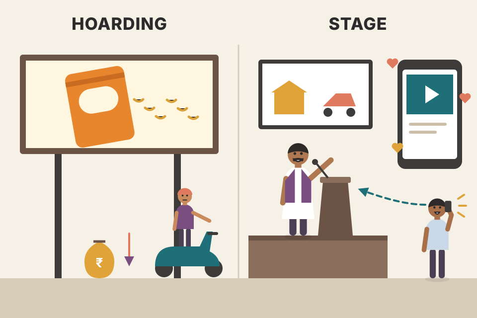
The owner of a well-known Indore namkeen brand has spent lakhs on hoardings. Then he starts speaking at food-industry conferences about how small brands can survive quick-commerce. Clips go viral on LinkedIn, trade papers quote him, and distributors he once chased now call him for a meeting.
Where it breaks: a viral clip can come from a lucky line. The association head built his reputation over two years of repeated talks across the country; the publicity was a by-product of having something worth saying, said often.
What's happening behind it
From the portrait: speaking well raised him in the eyes of his own association (presidency) and then of the wider world (press coverage), and that standing changed how important people treated him. The talks did what advertising money could not, because people trust a person speaking more than a paid notice.
Beyond the book: today this is called thought leadership or "earned media": publicity you get because what you say is newsworthy, as opposed to paid ads. Engineering blogs, conference talks and open-source write-ups do the same job for tech companies when hiring.
At work
A conference talk or a well-written engineering blog post about how your team solved a hard problem does for you what the association head's speeches did for him. Recruiters reach out, other teams ask for advice, and your company gets a reputation that helps it hire. Internally, the engineer who presents at the architecture forum becomes the person others consult. Visibility is not vanity if there is real work behind it.
Interview angle. If you have given a talk, written a technical post or presented at a guild meeting, mention it: it is evidence you can explain and influence, not just build.
Connects to
Getting people to come to you by being interested in their problems first: Part Two, Ch.1.
Talking in terms of what the audience cares about: Part Two, Ch.5.
07 · THE CLAIM
A shortcut to distinction, and the man who heard 150,000 speeches
pdf p245
Thomas's thesis. After the three stories he states the idea that gives the piece its title, in four parts:
Being able to speak is a shortcut to distinction.
It puts you in the spotlight and lifts you well above the crowd.
A person who speaks acceptably (not brilliantly, just well enough) usually gets credit for far more ability than they actually have.
That is why it is worth learning: the return is out of proportion to the effort.
"The ability to speak is a shortcut to distinction."Lowell Thomas (pdf p245)
The movement and its leader. Adult education, Thomas says, had been spreading across America, and its most striking figure was Carnegie, who had listened to and critiqued more adult speeches than anyone alive (Thomas makes a zoo joke of it, as if Carnegie were the record-holder in captivity). A cartoon in Robert Ripley's "Believe It or Not" put the count at 150,000 speeches. Thomas offers two ways to feel that number:
It is roughly one talk for nearly every day since Columbus reached America (1492).
If every one of those speakers had spoken for only three minutes, back to back, it would take about ten months of listening day and night to hear them all.
Check the arithmetic
Thomas's comparisons are easy to test. Change the numbers to see how they hold up (the defaults are his).
Beyond the book
Robert Ripley's "Believe It or Not!" was a hugely popular newspaper cartoon panel of odd facts, syndicated across hundreds of papers in the 1930s; appearing in it was a kind of fame in itself. The count of 150,000 was a publicity figure, not an audited one, but the arithmetic Thomas builds on it is right: about 162,000 days separate Columbus's landing (1492) and 1936.
Picture it
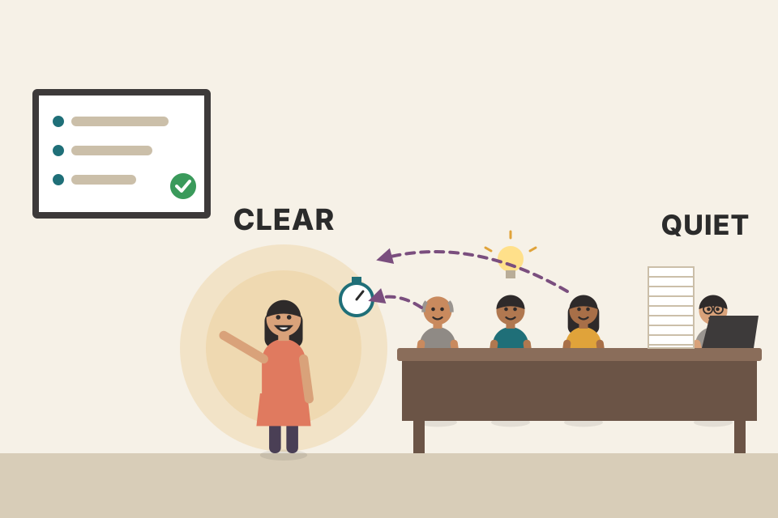
In a Delhi office, the one person who can give a crisp five-minute update at the monthly review is quietly assumed to understand the whole project better than everyone else, though the engineer who never presents may know more. People hear "clear" and think "competent".
Where it breaks: this halo can be undeserved, and Thomas says so: the credit can far exceed the real ability. Over time, good teams check the work behind the words. Use the shortcut to get heard, not to replace the substance.
What's happening behind it
Thomas's point: listeners cannot see your skill directly; they see how you present it. Speaking well is a visible signal, so it is rewarded more than invisible skill.
Beyond the book: psychologists call the spill-over the halo effect (Edward Thorndike, 1920): one visible good trait (fluency, confidence, looks) makes people rate a person higher on unrelated traits too. It is why confident speakers are often over-trusted, and why structured interviews and written evaluations exist: to correct for it.
At work
Two engineers propose competing designs. One talks through trade-offs calmly with a simple diagram; the other reads dense slides. The room tends to back the first, even when the second design is better. Two lessons: if you have the better idea, learn to present it, or the halo goes to someone else; and when you are the one judging, ask for the written trade-offs so the halo does not decide for you.
Interview angle. Interviewers are human; clear structure (say what you will cover, cover it, sum up) makes the same content score higher. In system-design rounds, narrate your reasoning out loud: silent thinking reads as being stuck.
Thomas now turns to Carnegie himself. His career, Thomas says, shows what a person can achieve when gripped by an original idea and full of enthusiasm. He sets it out as a list of before-and-after contrasts:
Then
Later
Born on a Missouri farm ten miles from the nearest railway; first saw a streetcar at twelve.
By forty-six he had travelled the far corners of the earth, from Hong Kong to Hammerfest in Arctic Norway, and once got closer to the North Pole than Admiral Byrd's base, Little America, was to the South Pole.
Picked strawberries and cut cockleburs (a prickly weed) for five cents an hour.
A highly paid trainer who taught big companies' executives how to express themselves.
A cowboy in western South Dakota: herding cattle, branding calves, riding fences.
Went to London to put on shows under the patronage of the royal family.
A complete failure the first half-dozen times he tried to speak in public.
Became Lowell Thomas's personal manager; Thomas credits much of his own success to Carnegie's training.
Beyond the book
Who Lowell Thomas was: an American journalist, travel lecturer and later one of the best-known radio news broadcasters in the United States. After the First World War he toured an illustrated travel show about the Middle East, including the story of T. E. Lawrence, which helped make "Lawrence of Arabia" famous. Carnegie worked as his business manager on that show around 1919, including its long London run, which is the "royal patronage" Thomas mentions. Byrd was Admiral Richard E. Byrd, the polar explorer whose Antarctic base was called Little America. Carnegie was born in 1888 (spelling his name "Carnagey" until he changed it in the 1920s), so "by forty-six" means about 1934.
Picture it
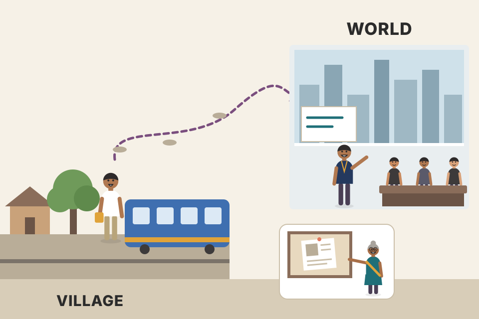
A boy from a village in Vidarbha who first rode a train at fourteen ends up running training programmes for managers in Singapore and Dubai, and his old teachers keep his newspaper photo pinned in the staff room.
Where it breaks: "from village to the world" stories make it look like a straight climb. Thomas's next pages show Carnegie's path was mostly failure, discouragement and false starts, with the success coming late. The contrasts are the frame; the failures are the picture.
What's happening behind it
Thomas's purpose: each contrast says the same thing: where you start does not decide where you end up. That is also the promise of Carnegie's course and of this book, so the portrait doubles as an argument that the reader can change too.
Beyond the book: the "rags to riches" shape is one of the oldest in American writing (the Horatio Alger stories), and readers find it persuasive partly because of survivorship: we hear about the farm boys who made it, not the many who did the same things and did not. Take the lesson (persistence and practice matter), not a guarantee.
At work
Many strong engineers came in through unusual doors: a support job, a bootcamp, a non-CS degree, a small-town college. Thomas's list is a reminder that "a total failure the first half-dozen times" is the normal start, not a sign you are in the wrong place. The first few design reviews you lead, the first few on-call incidents you run, will feel clumsy. That is the part of the story everyone has.
Interview angle. "Walk me through your background." A non-linear path is an asset if you tell it as a set of contrasts with a thread: what each step taught you that you use now.
Connects to
Carnegie's own short account of his background and his early classes: front matter.
09 · YOUTH
Hard luck on the farm, and shame at college
pdf p245–246
north-west Missouri farmfloods · hog cholera · mortgageState Teachers' College, Warrensburg600 students$1 a day board: too dear3 miles on horseback
What he felt. By the time he reached college, Carnegie felt like an outsider. Only about half a dozen of the 600 students were too poor to live in town, and he was one; he was embarrassed by clothes he had outgrown and by having to hurry home each evening for the milking.
Why he was poor. The family's first farm kept failing: the river nearby flooded the crops year after year, disease killed the hogs, livestock prices collapsed, and the bank was threatening to take the land. They gave up and bought a farm near the teachers' college in Warrensburg, but a dollar a day for lodging in town was beyond him, so he commuted three miles each way on horseback.
What a day looked like. Farm chores before and after classes, homework late into the night, and even a 3 a.m. alarm in winter: his father bred pedigree pigs, and newborn piglets kept warm by the kitchen stove had to be taken out to their mother to feed in the middle of the night.
The search. So he looked for a shortcut to distinction. He noticed that a few groups on campus had influence and status: the football and baseball players, and the students who won debating and public-speaking contests. He had no talent for sport, so he decided to win a speaking contest.
Picture it
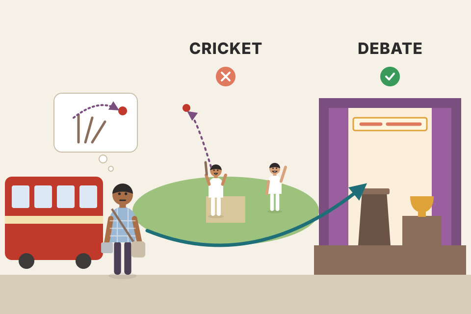
A first-year student at an engineering college in Tamil Nadu is one of the few day scholars who takes two buses from his village each morning, in a shirt his cousin outgrew. The hostel crowd seems to belong; he does not. He notices that the students everyone knows are the cricket team and the ones who win the inter-college debate, and he is hopeless at cricket.
Where it breaks: today the routes to status on campus are wider (coding contests, a startup club, a YouTube channel). But the move is the same as Carnegie's: pick the one route to standing you can actually win, and put everything into it.
What's happening behind it
Thomas's explanation: poverty and shame produced an "inferiority complex", and the need to feel important (the theme of Part One, Ch.2) drove Carnegie to look for a way to be somebody. He chose a contest he could train for, rather than one that depended on natural ability.
Beyond the book: "inferiority complex" was a fashionable term in the 1930s, from the psychologist Alfred Adler, who argued that feelings of inferiority can push people to strive and compensate. Carnegie's story fits Adler's idea neatly; the same feeling crushed O'Haire for years before it drove him.
At work
Not everyone can be the team's fastest coder or deepest systems expert. Carnegie's move was to pick a visible skill that rewards practice more than talent. At work that might be writing the clearest design docs, running the best incident calls, or giving the demo at sprint review. These are learnable, they are noticed, and few people bother to get good at them.
Interview angle. "What are you known for on your team?" A good answer names a skill like this and shows how you built it on purpose.
Connects to
The desire to feel important, which Carnegie calls the deepest urge in human nature: Part One, Ch.2.
Defeat after defeat, then every contest in college
pdf p246–247
The practice. Months of preparation went into every talk. He rehearsed wherever he happened to be: on horseback, at the milking, and in the barn, where his only audience was a flock of pigeons.
The losses. For all that effort, he lost contest after contest. He was eighteen, sensitive and proud, and he became so discouraged and depressed that, Thomas says, he even thought about suicide.
The turn. Then, quite suddenly, he started winning: not one contest but every speaking contest in the college.
The first teaching. Other students begged him to coach them, and they started winning too. This is the first sign of what he would later do for a living: he learned something the hard way, then found he could pass it on.
Thomas mentions Carnegie's suicidal thoughts in one plain sentence, and so do we. If you are ever in that place yourself, talk to someone you trust or a helpline today; in India, for example, Tele-MANAS (14416) is free and available around the clock.
Reflect, then reveal
Think of something you have tried several times and keep failing at (a talk, an interview loop, a certification, a habit). Write what you have been doing each time.
Picture it
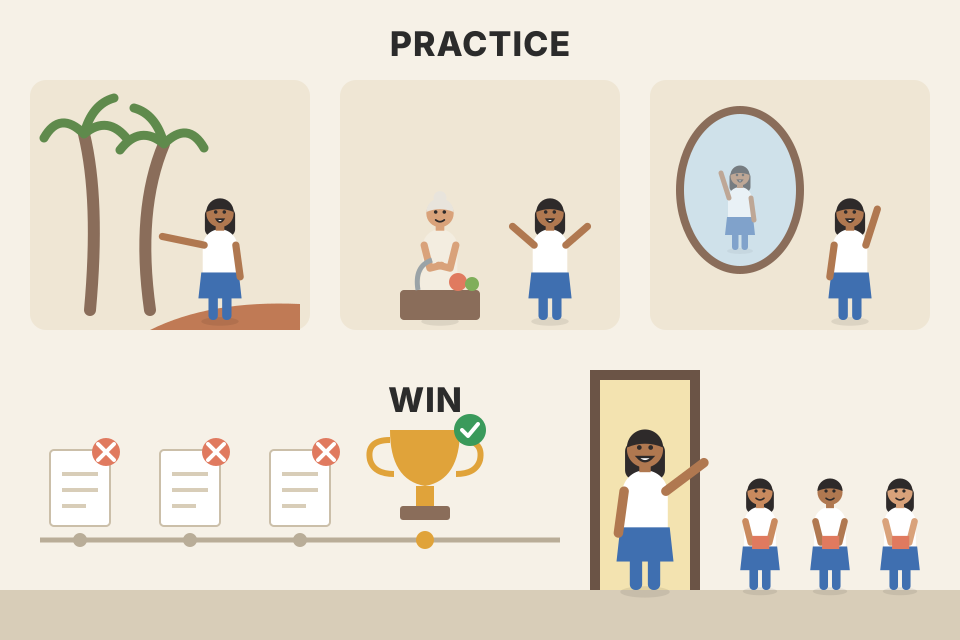
A girl in Kochi practising for the school elocution competition: reciting to the coconut trees on the walk home, to her grandmother while she cuts vegetables, to the mirror in the bathroom. She loses three years running. In the fourth year she wins, and the next summer three juniors turn up at her door asking her to coach them.
Where it breaks: the story makes it look as if effort guarantees the win. Thomas never explains why Carnegie suddenly started winning; most likely the many failures taught him what judges and audiences respond to. Effort with feedback works; effort without it can just repeat the same mistake.
What's happening behind it
From the portrait: Carnegie's success came only after a long run of public failure that hurt him badly. Two things stand out: he kept practising through it, and once he cracked it, he could teach it, because he remembered exactly what it was like not to know.
Beyond the book: learning researchers describe two related ideas. Deliberate practice (Anders Ericsson) says improvement comes from focused practice with feedback, not just repetition. And the protégé effect: people often learn a skill more deeply when they have to teach it, because explaining forces them to understand what they were doing by instinct. Carnegie coaching his classmates is both at once.
At work
Learning by teaching. The fastest way to really understand a part of the system is to explain it: write the onboarding doc, run the brown-bag session, mentor the new hire through their first on-call shift. Gaps in your own understanding show up the moment someone asks "but why?". Senior engineers who teach often become the people others rely on, just as Carnegie's classmates relied on him.
Interview angle. "Tell me about a failure" or "a time you didn't succeed at first". Carnegie's arc is the ideal shape: real, repeated failure; what you changed in how you practised; the eventual success; and what you then passed on to others. Interviewers remember a candidate who failed, adjusted and taught others far better than one who claims never to have failed.
Connects to
Praising every small improvement keeps people going through a run of failures: Part Four, Ch.6.
Selling across the Badlands: from tears in a hotel room to the top route
pdf p247
western Nebraska · eastern WyomingAlliance, NebraskaArmour and Company, South Omahawestern South Dakota25th → 1st of 29 routes2 years
First failure. His first job out of college, selling correspondence courses to ranchers across the sand hills of western Nebraska and eastern Wyoming, broke him. Energy and enthusiasm made no difference; one afternoon in Alliance, Nebraska, he ended up crying on his hotel bed, wishing he could retreat to college and knowing he could not.
Getting to Omaha. He resolved to start again in Omaha, and since he could not afford the fare, he paid his way on a freight train by looking after two wagons of wild horses. In South Omaha, Armour and Company took him on to sell bacon, soap and lard.
The territory. Armour sent him to the remote cattle country and Badlands of western South Dakota, including Native American reservations. Getting around meant freight trains, stagecoaches and horses, and the hotels were rough frontier places. He taught himself the trade from salesmanship books, and picked up whatever the region demanded, from riding half-wild horses to playing cards with local Native Americans to chasing payment from customers.
Two working habits.
Solving the customer's problem. When an inland storekeeper could not pay cash for the bacon and hams he had ordered, Carnegie took a dozen pairs of shoes off the man's shelves, sold them to railway workers, and sent the money to Armour.
Using every minute. He often rode a hundred miles a day by freight train. Whenever it stopped to unload, he ran into town, saw three or four shopkeepers and took their orders, then raced back and jumped aboard as the train pulled out.
The result. Within two years he took a poor territory that ranked 25th and made it 1st of the 29 car routes running out of South Omaha. Armour offered him a promotion, telling him he had done what seemed impossible. He turned it down and resigned.
Dated wording. Thomas writes of "Indian country" and of playing poker "with the Indians". The people meant are Native Americans of the Plains (much of western South Dakota is Lakota land, including reservations); today we name them that way.
Picture it
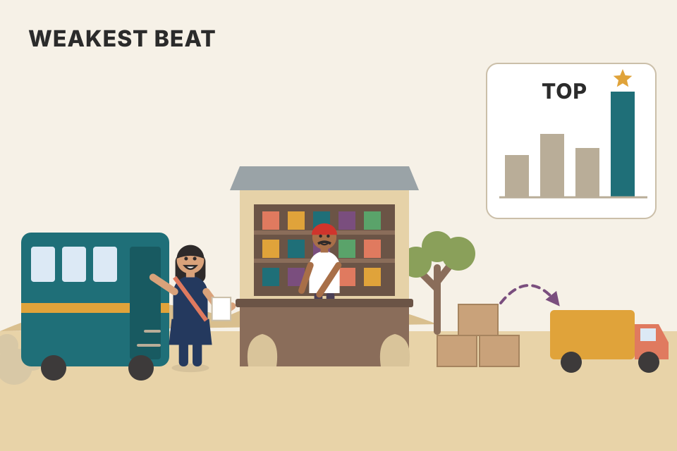
A young FMCG sales rep is given the weakest beat in rural Rajasthan: dusty roads, kirana stores that buy on credit, buses twice a day. She learns the shopkeepers' problems, helps one clear old stock by finding him a bulk buyer, jumps off the bus at every stop to take orders, and in two years her beat is top of the zone. Then she quits to do something else entirely.
Where it breaks: quitting right after winning looks odd in the picture, and it was odd for Carnegie too. Thomas does not say why he resigned, only what he did next. Success at a job you do not care about can still be the wrong job.
What's happening behind it
From the portrait: the second sales job worked where the first failed partly through sheer hustle, but the shoes story shows something more: he helped the customer solve their problem (no cash) so that both he and Armour got paid. That is the "eager want" of Part One, Ch.3, learned on the road years before he wrote it down.
Beyond the book: the move from crying in a hotel room to topping 29 routes is another mastery experience (plate 4): failing once did not mean failing again in a different setting, with more skill.
At work
The shoes trick is how good engineers handle "we can't do that". A team that cannot adopt your API because their auth is old? Write the small adapter for them. A client who cannot pay for a full migration this quarter? Find the slice that unblocks them now. Solve the other side's obstacle and your own goal moves too.
Interview angle. "Tell me about a time you turned around something that was failing." Carnegie's route is a perfect STAR shape: a territory ranked 25th (situation), learning the customers and working every stop (actions), first of 29 in two years (result). Give the numbers.
Connects to
Getting what you want by helping others get what they want: Part One, Ch.3.
Acting. After resigning from Armour he went to New York, studied at the American Academy of Dramatic Arts, and toured the country playing Dr. Hartley in the play Polly of the Circus. He had the sense to see he would never be a great actor like Edwin Booth or John Barrymore, the stage stars of the day.
Selling cars. So he went back to selling, this time cars and trucks for the Packard Motor Car Company. He knew nothing about machinery and cared even less. He was miserable and had to force himself to work each day.
The real wish. What he wanted was time to study and to write the books he had dreamed of writing since college. So he quit again. The plan: write stories and novels by day, and earn his living teaching at a night school.
The key question. Teach what? Looking back at college, he realised that his training in public speaking had given him more confidence, courage and poise, and more ability to deal with people in business, than all his other college courses put together. That is what he would teach.
Which move? Choosing what to teach
Pick a response.
Picture it
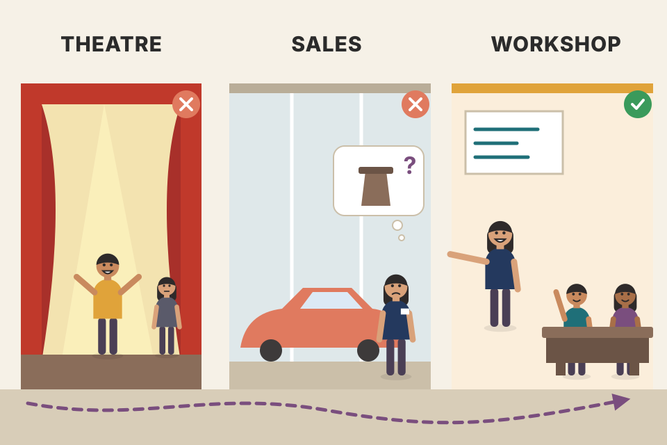
A Mumbai engineer tries theatre for two years, realises she will never be a lead actor, takes a sales job at a car showroom she hates, and finally asks herself what actually changed her life. The answer is the college debate club. She starts a weekend public-speaking workshop for freshers, and it fills up.
Where it breaks: the "find your passion" telling skips how unsure each step felt. Carnegie did not know acting or Packard were detours until he tried them; the useful habit is the honest question at the end, "what has helped me most?", not a passion that was always there.
What's happening behind it
From the portrait: two honest self-judgements. He accepted he would not be a star actor, and he accepted he hated selling machinery, even though he could do it. Then he asked what in his own life had worked best, and built on that. He would teach the thing he had personally learned the hard way.
Beyond the book: the acting years were not wasted: voice, presence and handling an audience are what a speaking teacher needs. Careers often look like detours that later turn out to be preparation, but only in hindsight.
At work
When you mentor or write internal docs, teach what actually made the difference for you, not what the textbook says should. "The thing that finally made Kafka consumer groups click for me was drawing the partitions on paper" is more useful to a junior than a summary of the docs. And when you are unhappy in a role you are good at (a Packard job), it is worth asking Carnegie's question before you drift.
Interview angle. "Why are you leaving your current role?" or "Why this field?" Carnegie's honest version (I could do it, but it was not where my strengths or interests were; this is what I learned I'm best at) is better than either complaining about the old job or giving a vague answer.
Connects to
Carnegie's own description of what his course became and why: front matter.
13 · THE BET
The YMCA bet: no salary, a share of profits, and a course that spread
pdf p248
refused: $2 a nighttook: a share of net profits3 years later: $30 a nightNew York · Philadelphia · Baltimore · London · Paris
The pitch. He asked the YMCA schools in New York to let him run public-speaking courses for business people.
The refusal. The idea of turning business people into orators struck them as absurd. They knew: they had tried such courses and they had always failed. They would not even pay him two dollars a night.
The deal. So he offered to work on commission: a percentage of the net profits, if there were any. Within three years, on that same basis, they were paying him thirty dollars a night instead of two.
The spread. The course grew. Other YMCAs heard of it, then other cities. Carnegie became a travelling teacher covering New York, Philadelphia, Baltimore, and later London and Paris.
The textbook. Every existing textbook was too academic and impractical for the business people who signed up, so he wrote his own, Public Speaking and Influencing Men in Business. It became the official text of all the YMCAs and of the American Bankers' Association and the National Credit Men's Association.
Worked example: what the commission deal meant (modelled)
The book gives only $2 and $30 a night. A modelled comparison: say he taught 2 nights a week for 30 weeks a year (60 nights).
Flat fee he asked for
$2 × 60 nights = $120 a year, whether the class was empty or full. The YMCA carries the risk; he gets the floor.
Share of profits he took
Year 1 could have been close to zero. By year 3, at $30 a night, $30 × 60 = $1,800 a year, 15 times the flat fee. He carried the risk and kept the upside.
The real lesson is not the money. By betting on results, he removed the YMCA's reason to say no ("it always fails, we won't pay") and proved the course worked with their own students.
Picture it
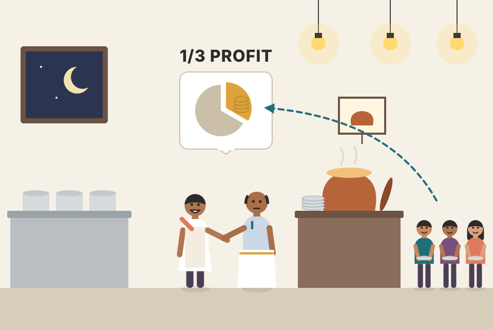
A young cook asks a Chennai mess owner to let him start a weekend evening biryani counter. The owner says biryani never sells there and he will not pay a cook for it. The cook says: pay me nothing, just give me a third of whatever profit the counter makes. Three years later the biryani counter is the reason people come, and his share is far more than any salary the owner would have offered.
Where it breaks: a profit share only works if you can survive the lean months, and if you trust the other side's accounts. Carnegie was willing to gamble his evenings on it and the YMCA turned out to be a fair partner; many people cannot take that bet.
What's happening behind it
From the portrait: the YMCA's objection was based on experience: such courses had always failed. Arguing would not have changed that. Carnegie offered a deal where they could not lose, which turned "no" into "why not". Then the results did the persuading. And when the books did not fit his students, he wrote his own, from practice rather than theory.
Beyond the book: in negotiation terms this is aligning incentives and removing the other side's risk. It is also an early version of what product people call proving demand with a minimum viable product: run it small, measure, then scale.
At work
Your team doubts a new idea: a new testing approach, a caching layer, an internal tool. "It never works here" is the YMCA's answer. Instead of arguing, offer a bet they cannot lose: "Let me try it on one service for two sprints; if p95 latency doesn't drop by 20% we roll it back." When the results come in, they argue for you. And if the existing docs do not fit your team, write your own practical guide, as Carnegie wrote his textbook.
Interview angle. "Tell me about a time you got buy-in for an idea people resisted." The strongest answers show you understood why they resisted (past failures, risk) and lowered the risk with a small, measured pilot, rather than simply arguing harder.
Connects to
You can't win an argument; change the deal instead: Part Three, Ch.1.
Throwing down a challenge and letting results speak: Part Three, Ch.12.
14 · THE METHOD
Do the thing you fear, and get a record of successes behind you
pdf p248–249
Everyone can talk when angry. Carnegie liked to claim that anyone can speak well when they are mad. Knock the least educated man in town to the ground, he said, and when he gets up he will speak with as much fire and force as William Jennings Bryan (the most famous orator in America) at his peak.
The two ingredients. From that he drew his theory: almost anyone can speak acceptably in public if they have
self-confidence, and
an idea that is boiling inside them, something they really want to say.
How to get confidence. His recipe was simple:
"Do the thing you fear to do and get a record of successful experiences behind you."Carnegie's method, as reported by Thomas (pdf p249)
How the class worked.
Everyone speaks at every session. He made sure of it; nobody could just watch.
The audience is on your side. Everyone in the room is in the same boat, so listeners are sympathetic, not judging.
Constant practice builds courage, confidence and enthusiasm that carry over into ordinary conversations and private life.
What he really sold. Carnegie would say that teaching public speaking was only incidental. His real job, the one that paid his living all those years, was helping people conquer their fears and develop courage.
Self-audit: your speaking ladder
Carnegie's rule turned into rungs for an engineer. Tick the ones you have actually done in the last three months.
Rewrite it: say it like you mean it
Fear shows up in how people speak. Pick a nervous version, think how you would say it, then reveal a confident one.
Picture it
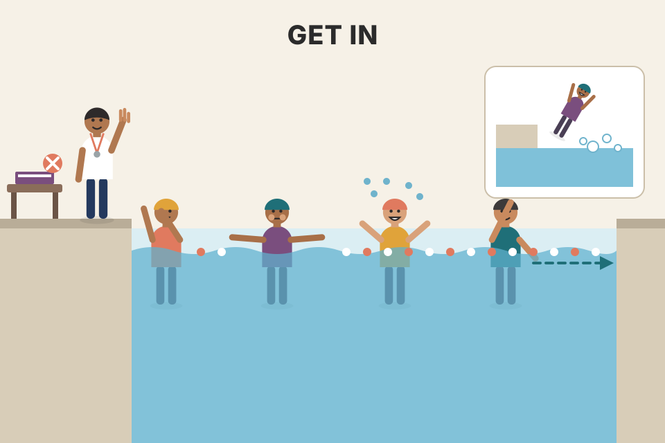
Learning to swim at a municipal pool in Ahmedabad. Reading about strokes does nothing; the coach makes everyone get in on day one, holding the edge, then letting go for three seconds, then a width. All the other learners are splashing and swallowing water too, so nobody laughs. By the end of the summer you jump in without thinking.
Where it breaks: water has a clear success test (you float or you don't). Speaking has a fuzzier one, and a bad audience can make a good talk feel like failure. That is why Carnegie's class mattered: a sympathetic room that makes the early "successful experiences" possible.
What's happening behind it
From the portrait: fear shrinks when you act in spite of it and nothing terrible happens; each such time becomes part of a "record" you can recall next time. A sympathetic audience makes early successes likely, and a burning idea gives you something more important to focus on than yourself.
Beyond the book: this is very close to exposure therapy, the standard psychological treatment for phobias and social anxiety: gradual, repeated contact with the feared situation in a safe setting, until the fear response fades. It is also Bandura's mastery experience (plate 4). Fear of public speaking is one of the most common fears people report in surveys, so Carnegie's market was huge.
At work
Practice over theory. You will not get better at presenting design reviews by reading about presenting. Climb the ladder above, one rung a month. Find or create a sympathetic room: a team "demo Friday", a brown-bag series, a reading group where everyone presents once. Speak about something you care about (Carnegie's "boiling idea"): the bug that took you three days, the tool you built. Passion covers a lot of polish.
Interview angle. Mock interviews are Carnegie's class: do the feared thing (whiteboard design, live coding with someone watching) repeatedly with a friendly partner until you have a record of getting through it. Reading another system-design book will not fix freezing; ten mock rounds usually will.
Connects to
Fire from an idea you care about, and appealing to nobler motives: Part Three, Ch.10.
Encouragement that makes a fault seem easy to correct (what a sympathetic room does): Part Four, Ch.8.
15 · THE SYSTEM
Swift, practical, and lasting: how a speaking class became a movement
pdf p249–250
Who the students were. He set out to run just a public-speaking course, but his students were working business people. Many had not sat in a classroom for thirty years. Most were paying the fee in instalments. They wanted results, and fast: things they could use in a sales meeting or in front of a group the next day.
What that forced. Carnegie had to be quick and practical. The result, Thomas says, was a training system unlike any other, a mix of four things:
public speakingsalesmanshiphuman relationsapplied psychology
He was not bound by fixed rules, and Thomas jokes that the result was "as real as the measles and twice as much fun".
It lasted. When a course ended, graduates often formed their own clubs and kept meeting every two weeks for years.
One Philadelphia group of nineteen met twice a month every winter for seventeen years.
Students regularly travelled 50 or 100 miles to attend.
One commuted every week from Chicago to New York.
The big claim. Thomas closes with Harvard's William James, who used to say that the average person develops only about 10 percent of their latent mental ability. By helping business people develop their hidden potential, Thomas concludes, Carnegie built one of the most important movements in adult education. The piece is signed Lowell Thomas, 1936 (pdf p250).
Picture it
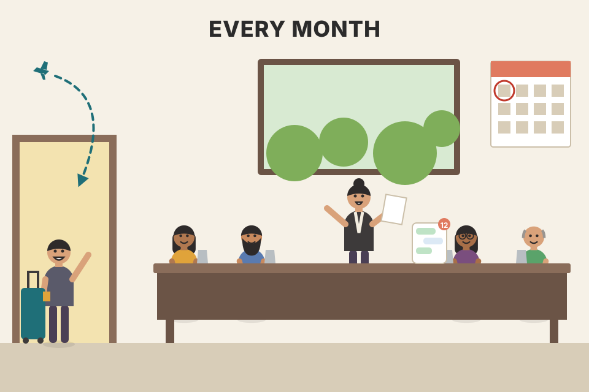
A WhatsApp group from a 2015 weekend leadership workshop in Bengaluru that is still active: the same dozen people meet at a café on the first Saturday of every month, one of them flies in from Hyderabad, and someone always brings a problem from work for the group to rehearse.
Where it breaks: a group chat costs nothing to keep alive. Carnegie's graduates gave up evenings and travelled hours to meet in person for seventeen years, which says the course gave them something they could not get elsewhere.
What's happening behind it
From the portrait: the students' impatience shaped the method. People paying in instalments, using the lesson tomorrow, will not sit through theory; so Carnegie kept only what worked in practice and combined skills that schools teach in separate places. The clubs show the deeper draw: a supportive group where you keep practising.
Beyond the book: the "10 percent" line is usually traced to William James's essays (such as "The Energies of Men", 1907), where he argued that people use only a small part of their possible energy and resources. He did not mean 10% of the brain; that later myth is false, as brain imaging shows nearly all of the brain is active over a day. Read Thomas's line as "most people have more potential than they use", which is what James meant.
At work
Good internal training works like Carnegie's course: short, built around problems people have this week, with practice in every session. A "how we do code review" workshop where everyone reviews a real PR beats a slide deck on review guidelines. And alumni groups matter: a study circle that keeps meeting after a course (a weekly paper-reading club, a system-design practice group) keeps the skill alive long after the course ends.
Interview angle. "How do you help your team grow?" Describe something practical and repeated (pairing, review rotations, a practice group), and what changed, rather than "I share articles".
His nine suggestions, including applying the rules at every chance and reviewing your progress: front matter, "Nine Suggestions".
16 · THE LAST PAGE
Record your triumphs here
pdf p251
What the page is. After Thomas's signature (pdf p250), the book ends with a page that carries only a heading, "Record Your Triumphs Here", and blank space. It is the other end of the ninth of Carnegie's "Nine Suggestions" at the front of the book (front matter): write down your successes in using the principles, specifically, with names, dates and results. He says the record will push you to greater effort, and that you will enjoy rereading it years later. It pairs with his suggestion to review your week every Saturday evening, asking what went wrong, what went right and what you learned.
Why it fits this appendix. It is exactly the method Thomas describes in plate 14: confidence comes from "a record of successful experiences". The book hands you a place to build that record.
Your triumphs log
Write one specific success: who, when, which principle, what happened. Entries are saved only in this browser on this device (nothing is sent anywhere). Keep names to first names or initials if you share this device.
No entries yet. Carnegie's advice: be specific.
Picture it
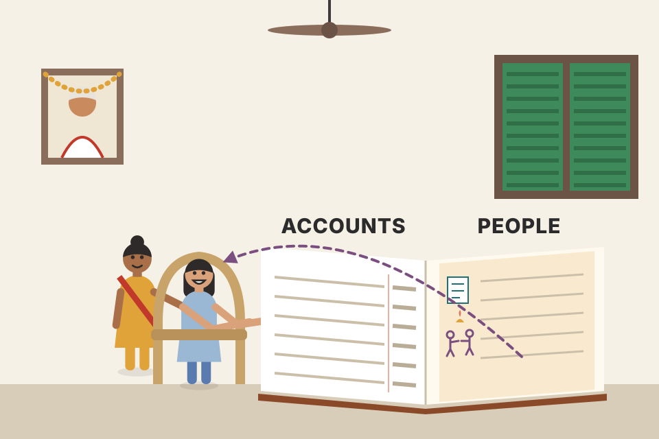
A grandmother's old diary of household accounts in a Kolkata home, with small notes in the margins: "Neighbour's daughter came for help with her exam form, 1987", "Made peace between the brothers at Durga Puja". Read years later, it is less a record of money than a record of how she handled people, and the family treasures it.
Where it breaks: her notes were written for herself, without a plan. Carnegie wants the log used on purpose: tied to a principle, specific, and reread to spur you on. Done right, it is a training log, not just a memory book.
What's happening behind it
From the book: recording wins keeps you applying the principles (suggestion 9), and the weekly review catches mistakes (suggestion 8). Together they turn reading into practice.
Beyond the book: Teresa Amabile's research on workers' daily diaries found that noticing small wins ("the progress principle") is one of the strongest boosts to motivation at work. A written success record also helps against the habit of remembering failures more vividly than successes.
At work
Engineers call this a brag document: a running list of what you did and what it changed ("cut p95 latency from 800 to 300 ms", "mentored A. through first on-call"). It makes performance reviews, promotion packets and résumé updates easy, and it is the raw material for behavioural interviews. Add a "people" section: the hard conversation that went well, the stakeholder you won over, and which principle you used.
Interview angle. Every "Tell me about a time…" question needs a specific story with names (or roles), dates and results. A triumphs log kept for six months gives you a ready bank of them, which is exactly what Carnegie asked for.
17 · THE WHOLE BOOK
All thirty principles on one page
pdf p25–251 · whole book
This is the last page, so here is the whole book in four lists, each principle linked to its chapter page. Thomas's portrait explains where they came from: a night class in which people practised on each other, week after week, until something worked. Each Part ends with an "In a Nutshell" list in the book (pdf p66, p119, p196, p238–239); these are those lists.
Part One · Fundamental Techniques in Handling Peoplepdf p25–66
The book's own framing of Part Four: a leader's job often includes changing people's attitudes and behaviour, and these nine are suggestions for doing it. The front matter and this appendix carry no principle of their own: front matter (how to use the book) · this page (who wrote it and how the method was born).
Pick one for this week
Carnegie's advice was to practise, not to memorise. Let the page choose one principle at random, or filter by Part, and try it on purpose at least three times this week.
Press a button.
18 · WRAP-UP
Summary and key terms
pdf p240–251
Who and why. Lowell Thomas, Carnegie's friend (Carnegie had once been his manager, and Thomas credits Carnegie's training for much of his success), wrote this portrait in 1936 as the original edition's introduction; the revised edition reprints it at the back.
The crowd. In January 1935, during the Depression, 2,500 well-off New Yorkers answered a newspaper ad ("Learn to speak effectively. Prepare for leadership.") and stood for ninety minutes in the Hotel Pennsylvania ballroom.
The demand. The course had sold out for 24 years and trained 15,000 people; big companies ran it in-house. A two-year survey found adults' top interests were health, then human relations, and that they wanted practical tips, not speeches or psychology. No textbook existed. Knowledge alone had not brought them success; talking well and "selling" ideas did.
The proof. In 75-second talks: Patrick O'Haire (four years of school, too scared to open an office door) became a valued salesman who kept 2,500 laughing; Godfrey Meyer (struck dumb in class) topped 96 candidates for Clifton's council; an association head who could not speak to his board became its president and earned more publicity than $250,000 of ads.
The claim. Speaking is a shortcut to distinction: it lifts you above the crowd and earns you credit beyond your real ability. Carnegie had critiqued 150,000 talks (per Ripley).
The life. Missouri farm, floods and debt; riding three miles to college; ashamed of his clothes; months of lost contests (and thoughts of suicide at 18) before winning them all and coaching others; failure selling courses, then taking Armour's route from 25th to 1st of 29; acting; an unhappy spell at Packard.
The bet. The YMCA would not pay $2 a night, so he took a share of profits; in three years it paid $30 a night. The course spread to other cities, London and Paris, and he wrote his own practical textbook.
The method. Anyone can speak with confidence and a burning idea. Get confidence by doing what you fear and building a record of successes. Everyone speaks every session, before a sympathetic audience. His real job was helping people conquer fear.
The system and the movement. Fast, practical training for busy adults mixing speaking, selling, human relations and psychology; alumni clubs lasting up to 17 years; Thomas ties it to William James's idea of untapped potential.
The last page asks you to record your triumphs with names, dates and results.
Term or phrase
Meaning on this page
Where
A shortcut to distinction
The portrait's main claim: speaking well gets you noticed and credited beyond your actual ability. Also what young Carnegie went looking for at college.
pdf p245, p246
"Learn to speak effectively. Prepare for leadership."
The newspaper ad that drew the 1935 crowd.
pdf p240
The adult-education survey
Two-year study: adults want health first, human relations second, and practical tips.
pdf p241
75 seconds
The time limit for each graduate's talk at the ballroom evening.
pdf p242
Leadership gravitates to the person who can talk
Thomas's lesson from Godfrey Meyer.
pdf p243–244
Inferiority complex
The feeling of being less than others, which held back O'Haire and drove young Carnegie.
pdf p243, p246
150,000 speeches
Ripley's count of the talks Carnegie critiqued.
pdf p245
Commission basis
Carnegie's YMCA deal: a share of net profits instead of a $2 nightly salary.
pdf p248
Self-confidence + a boiling idea
Carnegie's two ingredients for acceptable public speaking.
pdf p249
Do the thing you fear
Carnegie's recipe for confidence: act, and build a record of successful experiences.
pdf p249
Conquer fears, develop courage
What Carnegie said his real job was; speaking was incidental.
pdf p249
Record Your Triumphs Here
The book's final page, for logging successes (suggestion 9).
pdf p251
19 · USE IT
Practice this week
beyond the book
Small exercises built from Carnegie's own method as Thomas describes it. The exercises are ours.
Your 75 seconds. Record yourself answering "Tell me about yourself" with the timer in plate 3. Listen back once, cut one thing, record again. Worked if: the second take fits in 75 seconds and has one clear point.
One rung up. Pick the lowest unticked rung on your speaking ladder (plate 14) and do it this week: ask one question in a big meeting, or give the sprint demo. Worked if: you did it, even badly. That is the first entry in your record.
Teach to learn. Explain one part of your system to a newer teammate (or write a one-page doc) without notes. Worked if: their questions show you one gap in your own understanding, and you go and fill it.
The YMCA bet. For an idea your team doubts, propose a small, time-boxed trial with a clear success measure instead of arguing for it. Worked if: the discussion moves from "should we?" to "what should we measure?".
Find the boiling idea. Before your next presentation, write one sentence: "The thing I really want them to understand is…". Open and close with it. Worked if: someone repeats that sentence back to you afterwards.
Start the log. Add three entries to the triumphs log (plate 16) this week: names, dates, results. Worked if: on Saturday you can read them back and say which principle each one used.
20 · LIMITS
Where it can go wrong
pdf p240–249 · plus beyond the book
What the portrait itself admits or implies.
The credit can be more than deserved. Thomas says outright that a decent speaker gets credit "out of all proportion" to their real ability. That is a warning as much as a promise.
Knowledge still matters. The successful people he describes had knowledge in addition to the ability to talk. Speaking is a multiplier on substance, not a replacement.
Success came slowly and painfully. Carnegie lost contest after contest, cried in a hotel room, hated a job, and changed careers several times. The method is practice, and practice takes time.
Speaking was not the real product. Carnegie said his job was helping people beat fear. If you only polish delivery and never face the fear, you have missed the point.
Beyond the book: our critique
It is a friend's portrait and an advertisement. Thomas was Carnegie's friend and a famous name, writing the introduction to his book. Numbers like "80 times more friends" and "1,000 percent a year" are a journalist's flourishes, and the 150,000 count came from a cartoon panel. Enjoy the stories; do not treat them as data.
Survivorship. We hear from three graduates who did brilliantly. We do not hear from those who took the course and nothing changed.
The halo effect cuts both ways. If fluent speakers are over-credited, quieter colleagues with better ideas get under-credited. As a team lead, do not let the loudest person win the design review by default: ask for written proposals and bring quieter people in.
The "10 percent" line is a myth if taken literally. William James meant people use only part of their potential energy and effort, not 10% of their brains. Modern brain imaging shows nearly all regions of the brain are active over a day.
"Anyone can speak when angry" is not a recipe. Anger gives energy, but speaking in anger at work usually backfires (see Ch.1 and Ch.10). Use the conviction, not the temper.
Fear of speaking can be clinical. For most people, Carnegie's exposure-style practice works. For severe social anxiety, practice in a supportive room still helps, but professional support (for example cognitive behavioural therapy) may be needed too.
Dated details. The course title ("Influencing Men"), "Indian country", and a world where business leaders are mostly men are of their time; the method itself applies to anyone.
21 · TEST YOURSELF
Check yourself
pdf p240–251
Try to answer before opening each one. Story recall first, then applying the lessons.
1. Who wrote this section, when, and why is it at the back of the book?
Lowell Thomas, broadcaster and Carnegie's friend, in 1936, as the introduction to the original edition. The revised edition reprints it at the end to give readers background on Carnegie.
2. What drew 2,500 people to the Hotel Pennsylvania in January 1935, and why was Thomas struck by it?
A full-page ad in the New York Sun promising to teach effective speaking and prepare people for leadership. It was an old idea, yet in the Depression, with about 20% of people on relief, well-off executives and professionals packed the ballroom and many stood for ninety minutes.
3. What did the adult-education survey find, and what was missing?
Over two years, the University of Chicago, the American Association for Adult Education and the United YMCA Schools found adults' first interest was health and the second was human relations: getting along with and influencing people, through practical tips rather than oratory or psychology lectures. No practical textbook on the subject existed.
4. How did the ballroom evening work?
Eighteen graduates were lined up and fifteen spoke for exactly 75 seconds each before the chairman banged the gavel and called the next speaker. They were a cross-section: salespeople, a baker, bankers, a dentist, an architect, a druggist from Indianapolis, a lawyer from Havana preparing one three-minute speech.
5. What was Patrick O'Haire's problem, and what changed?
Four years of school, a former mechanic and chauffeur, he was so afraid as a truck salesman that he walked past offices several times before going in, and nearly did not enter the course. Weekly speaking cured his fear of audiences and of his bosses; he was moved into the sales department and entertained 2,500 people that night.
6. What did Godfrey Meyer do with his tax bill, and what came of it?
Instead of fuming at home, he spoke against it at the town meeting. People urged him to run for the Clifton council; after weeks of speeches against waste, he topped 96 candidates and became a public figure in a town of 40,000.
7. How did young Carnegie try to find a "shortcut to distinction" at college, and how did it go?
Poor and ashamed, he saw that athletes and debate winners had status; lacking athletic talent, he chose speaking contests. He practised everywhere (on horseback, milking, to pigeons from a hay bale), lost repeatedly, became deeply depressed, then suddenly won every contest and coached others to win.
8. What did Carnegie achieve at Armour and Company, and what did he do next?
He took a South Dakota territory from 25th to 1st of 29 routes in two years, using hustle and tricks like selling a storekeeper's shoes to cover an unpaid order. He refused the promotion, studied acting in New York, toured in Polly of the Circus, then sold Packard cars unhappily.
9. How did Carnegie get his YMCA course started?
He realised public-speaking training had helped him more than all his other college courses. The YMCA refused to pay $2 a night because such courses always failed, so he worked for a share of profits; within three years that paid $30 a night. The course spread, and he wrote his own practical textbook.
10. What were Carnegie's two ingredients for speaking, and his recipe for confidence?
Self-confidence and an idea boiling inside you. Confidence comes from doing the thing you fear and building a record of successful experiences, which is why every student spoke at every session in front of a sympathetic class.
11. What did Carnegie say his real job was?
Not teaching public speaking, which was incidental, but helping people conquer their fears and develop courage.
12. Application: you freeze in system-design interviews despite reading two books. What would Carnegie's method suggest?
Stop adding theory; do the feared thing repeatedly in a friendly setting. Schedule mock interviews with peers, draw on a whiteboard while someone watches, and build a record of getting through. Pick designs you find genuinely interesting so you have a "boiling idea".
13. Application: your team says "we tried a monorepo once and it failed". How does the YMCA story help?
Don't argue with their experience. Offer a low-risk bet: migrate two small services for a fixed period with agreed success measures and an easy rollback. Let the results persuade, as Carnegie's profit-share deal did.
14. Interview: "Tell me about a time you failed." How does Carnegie's life give a good shape for the answer?
Real, repeated failure (lost contests, the Nebraska sales job), what you changed in how you practised or where you applied yourself, the eventual result with numbers (25th to 1st of 29), and what you then taught others. Own the failure plainly; spend most of the time on the change.
15. What is the book's last page, and what does Carnegie want you to do with it?
"Record Your Triumphs Here": a blank page for writing down your successes in applying the principles, specifically, with names, dates and results (suggestion 9 in the front matter), to keep you motivated and to reread years later.
22 · SOURCES
References
pdf p240–251
Book pages and other sources used on this page
Dale Carnegie, How to Win Friends and Influence People, revised edition (1981; Simon & Schuster 2009 printing), appendix: Lowell Thomas, "A Shortcut to Distinction" (1936), pdf p240–250, and "Record Your Triumphs Here", pdf p251. By page: ballroom evening and the ad p240; the course's history, companies, survey, missing textbook p241–242; the 75-second format and speakers p242; O'Haire p243; Meyer p243–244; association head p244; the main claim, Ripley's count, Carnegie's contrasts p245; farm and college p245–247; sales, Armour, acting p247–248; Packard, YMCA, textbook p248; method p248–249; system, clubs, William James p249; signature p250.
Same book, front matter: "How This Book Was Written—and Why" (pdf p13–18) and "Nine Suggestions" (pdf p19–23), suggestion 9 on recording triumphs (pdf p22). "In a Nutshell" lists: pdf p66, p119, p196, p238–239.
Beyond the book (named where used): A. Bandura, Self-Efficacy: The Exercise of Control (1997); K. A. Ericsson et al. on deliberate practice (1993); research on the protégé effect (learning by teaching); E. L. Thorndike, "A constant error in psychological ratings" (1920, the halo effect); N. MacLaren et al., "Testing the babble hypothesis" (The Leadership Quarterly, 2020); A. Adler on the inferiority complex; exposure therapy for social anxiety; T. Amabile and S. Kramer, The Progress Principle (2011); W. James, "The Energies of Men" (1907) and the later "10 percent of the brain" myth.
Historical notes (Beyond the book): Lowell Thomas's career and his post-war Lawrence of Arabia travelogue, which Carnegie managed; Robert Ripley's "Believe It or Not!"; Admiral Richard E. Byrd's Little America base; the Hotel Pennsylvania, New York; Carnegie's birth (1888) and change of name spelling from Carnagey. India helpline: Tele-MANAS, 14416.